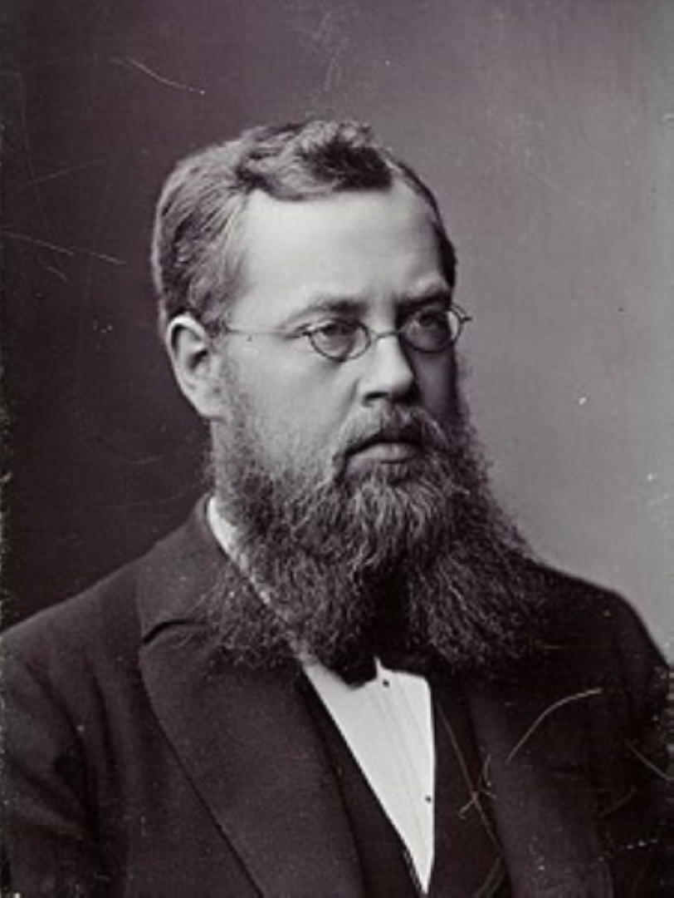
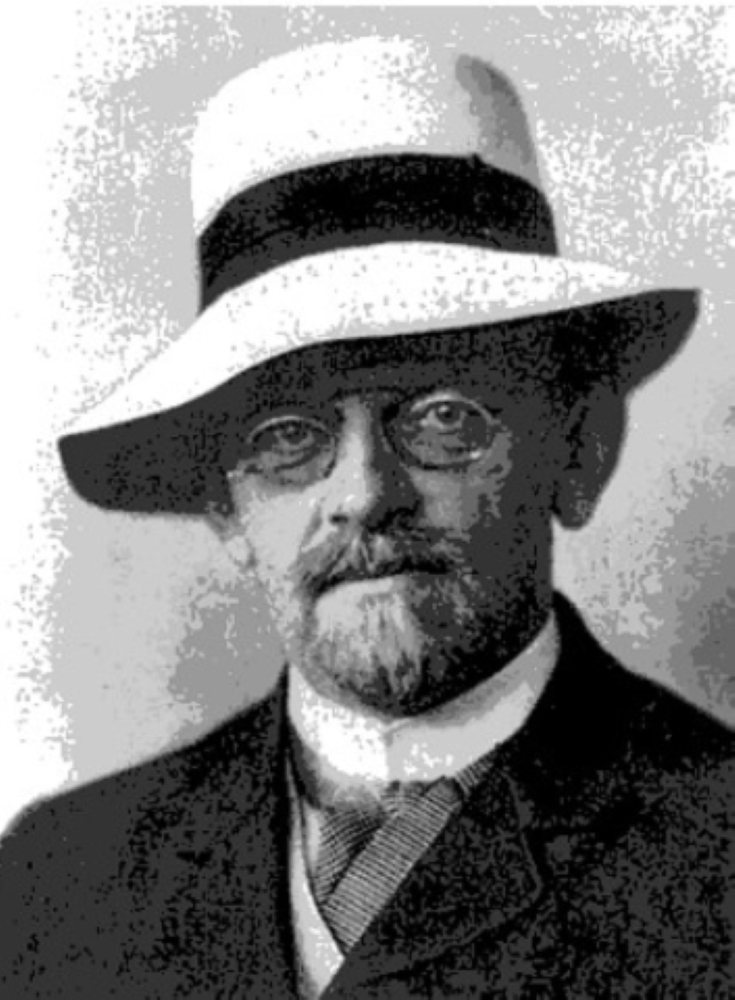
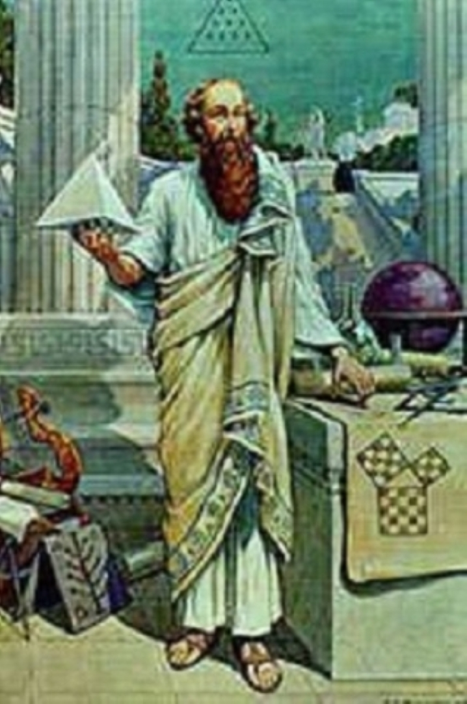
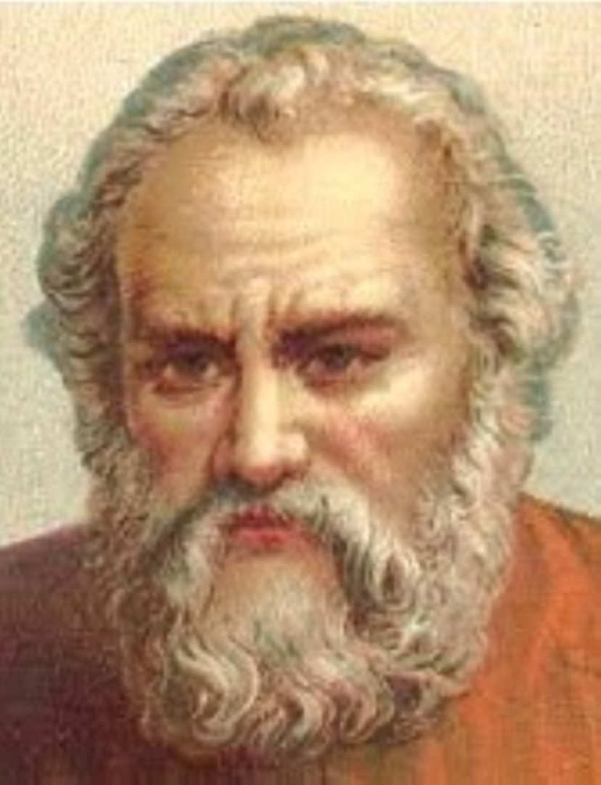
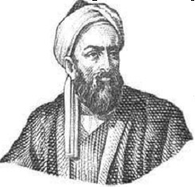
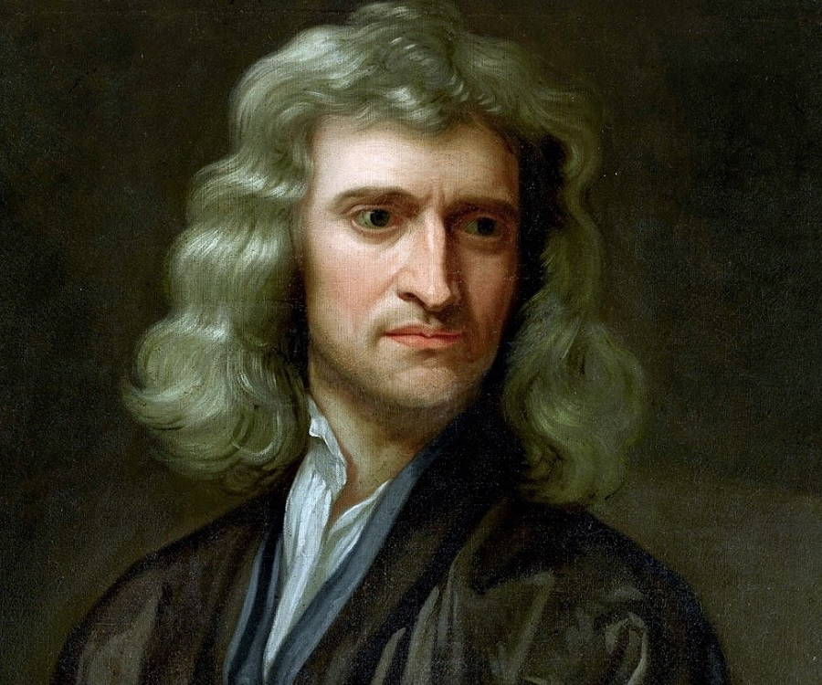

-

Muhammad ibn Musa al-Khwarizmi
Learn MoreMuhammad ibn Musa al-Khwarizmi
Who is Muhammad ibn Musa al-Khwarizmi?
was a Persian polymath from Khwarazm, who produced vastly influential works in mathematics, astronomy and geography. Around the 820 CE, he was appointed as the astronomer and the head of the library of the House of Wisdom in Baghdad. He was also known as the (Father of Algebra).
His achivements
- The creator of Hindu-Arabic numerals
- Kitāb ṣūrat al-arḍ (“The Image of the Earth”; translated as Geography)
- compiled a set of astronomical tables (Zīj), based on a variety of Hindu and Greek sources
-

Bernhard Riemann
Learn MoreBernhard Riemann
Who is Bernhard Riemann?
Bernhard Riemann was a German mathematician who made contributions to analysis, number theory, and differential geometry. In the field of real analysis, he is mostly known for the first rigorous formulation of the integral, the Riemann integral, and his work on Fourier series. His contributions to complex analysis include most notably the introduction of Riemann surfaces, breaking new ground in a natural, geometric treatment of complex analysis.
His achivements
- number theory
- differential geometry theor
- geometric treatment of complex analysis
-
Euclid
Learn MoreEuclid
Who is Euclid?
was an ancient Greek mathematician active as a geometer and logician. Considered the “father of geometry”, he is chiefly known for the elements treatise, which established the foundations of geometry that largely dominated the field until the early 19th century. His system, now referred to as the Euclidean geometry, involved new innovations in combination with a synthesis of theories from earlier Greek mathematicians, including Eudoxus of Cnidus, Hippocrates of Chios, Thales and Theaetetus.
His achivements
- Eudoxus of Cnidus theory
- Hippocrates of Chios
- Thales and Theaetetus
- Ecluidean theory
-

Henri Poincaré
Learn MoreHenri Poincaré
Who is Henri Poincaré?
was a French mathematician, theorical physicist, engineer, and philosopher of science. He is often described as a polymath, and in mathematics as “The Last Universalist”, since he excelled in all fields of the discipline as it existed during his lifetime.
-

Sophus Lie
Learn MoreSophus Lie
Who is Sophus Lie?
was a Norwegian mathematician. He largely created the theory of conditions symmetry and applied it to the study of geometry and differential equations. He had his primary education in the south-eastern cost of Moss, before attending high school at Oslo (known as Christiana).
His achivements
- the theory of conditions symmetry
- Create exceptional user experiences
- Discover new business opportunities
- Save resources
-

David Hilbert
Learn MoreDavid Hilbert
who is David Hilbert?
David Hilbert was a German mathematician and one of the most influential mathematician of the 19th and early 20th centuries. Hilbert discovered and developed a board range of fundamental ideas in many areas, including invariant theory, the calculus of variations, communicative algebra, algebraic number theory, the foundations of geometry, special theory of operators and it’s application to integral equations, mathematical physics and the foundations of mathematics.
His achivements
- invariant theory
- the calculus of variations
- algebraic number theory
- the foundations of geometry
-

Pythagoras
Learn MorePythagoras
Who is Pythagoras?
was an ancient Ionian Greek philosopher and the eponymous founder of the Pythagoreanism. His political and religious teachings were known in Magna Graecia and influenced the philosophies of Plato and Aristotle. Knowledge of his life clouded by legend, but he appears to have been the son of Mnesarchus, a gem-engraver on the island of Samos.
His Theory
- Pythagoras theorem
-

Archimedes
Learn MoreArchimedes
Who is Archimedes?
was a Greek mathematician, physicist, engineer, astronomer and inventor from the ancient city of Syracuse in Sicily. Although few details of his life are known, he is regarded as one of the leading scientists in classical antiquity. Considered the greatest mathematician of ancient history, and one of the greatest of all time, Archimedes anticipated modern calculus and analysis by applying the concept of the infinity small and the method of exhaustion to derive and rigorously prove a range of geometrical theorems.
His achivements
- applying the concept of the infinitely small and the method of exhaustion
- deriving an approximation of pi
- Archimedes' screw
- Archimedes' principle
-

Al-Bairuni
Learn MoreAl-Bairuni
Who is Al-Bairuni?
was a Khwarazmian Iranian scholar and polymath during the Islamic Golden Age. He has been called variously the (Founder of Indology), (Father of Comparative Religion), (Father of modern Geodesy) and the first anthropologist. Al-Biruni was well versed in physics, mathematics, astronomy and natural science, and also distinguished himself as a historian, chronologist and linguist. He studied almost all the sciences of his day and was rewarded abundantly for his tireless research in many fields of knowledge.
His achivements
- Founder of Indology
- Father of Comparative Religion
- the first anthropologist
-

Isaac Newton
Learn MoreSir Isaac Newton
Who is Isaac Newton?
an English mathematician, physicist, astronomer, alchemist, theologian, and author (described in his time as a "natural philosopher"), widely recognised as one of the greatest mathematicians and physicists and among the most influential scientists of all time. He was a key figure in the philosophical revolution known as the Enlightenment. His book Philosophiæ Naturalis Principia Mathematica (Mathematical Principles of Natural Philosophy), first published in 1687, established classical mechanics. Newton also made seminal contributions to optics, and shares credit with German mathematician Gottfried Wilhelm Leibniz for developing infinitesimal calculus.
His achivements
- His book Philosophiæ Naturalis Principia Mathematica
- shares credit with German mathematician Gottfried Wilhelm Leibniz for developing infinitesimal calculus
- The three laws of motion
-

Albert Einstein
Learn MoreAlbert Einstein
Who is Albert Einstein?
A German-born theoretical physicist who's considered one of the greatest and most influential physicists of all time. His intellectual achievements and originality led to "Einstein" becoming synonymous with "genius".in 1905, a year sometimes referred to as his annus mirabilis , Einstein published four seminal papers. Relativity and quantum mechanics are the two pillars of modern physics. Einstein is best known for developing the theory of relativity, but he also made important contributions to the development of the theory of quantum mechanics. In them, he established the theory of the photoelectric effect, explained Brownian motion, introduced special relativity, and proved the equivalence of massand energy.
His achivements
- developing the theory of relativity E= MC^2
- the theory of the photoelectric effect
- published four seminal papers
- extended the theory of gravitational fields in 1916
-
Blaise Pascal
Learn MoreBlaise Pascal
Who is Blaise Pascal?
was a French mathematician, physicist, inventor, philosopher and Catholic writer. He was a child prodigy who was educated by his father, a tax collector in Rouen. Pascal’s earliest mathematical work was on conic sections; he wrote a significant treatise on the subject of projective geometry at the age of 16. He later corresponded with Pierre de Fermat on probability theory, strongly influencing the development of modern economics and social science. In 1642, while still a teenager, he started some pioneering work on calculating machines (called Pascal’s calculators and later Pascalines), establishing him as one of the first two inventors of the mechanical calculator.
His achivements
- inventing the calculator called Pascalines